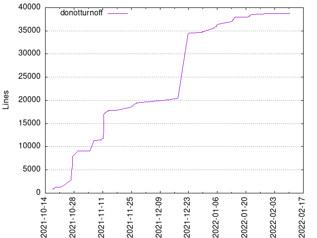
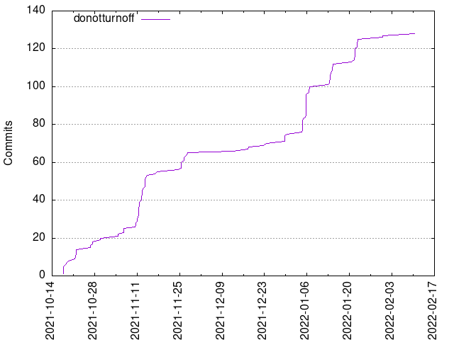

Authors
| Author | Commits (%) | + lines | - lines | First commit | Last commit | Age | Active days | # by commits |
|---|
| donotturnoff | 128 (100.00%) | 38737 | 18789 | 2021-10-17 | 2022-02-10 | 115 days, 15:32:12 | 37 | 1 |


| Month | Author | Commits (%) | Next top 5 | Number of authors |
|---|
| 2022-02 | donotturnoff | 1 (100.00% of 1) | | 1 |
| 2022-01 | donotturnoff | 52 (100.00% of 52) | | 1 |
| 2021-12 | donotturnoff | 10 (100.00% of 10) | | 1 |
| 2021-11 | donotturnoff | 45 (100.00% of 45) | | 1 |
| 2021-10 | donotturnoff | 20 (100.00% of 20) | | 1 |
| Year | Author | Commits (%) | Next top 5 | Number of authors |
|---|
| 2022 | donotturnoff | 53 (100.00% of 53) | | 1 |
| 2021 | donotturnoff | 75 (100.00% of 75) | | 1 |
| Domains | Total (%) |
|---|
| donotturnoff.net | 128 (100.00%) |
|---|